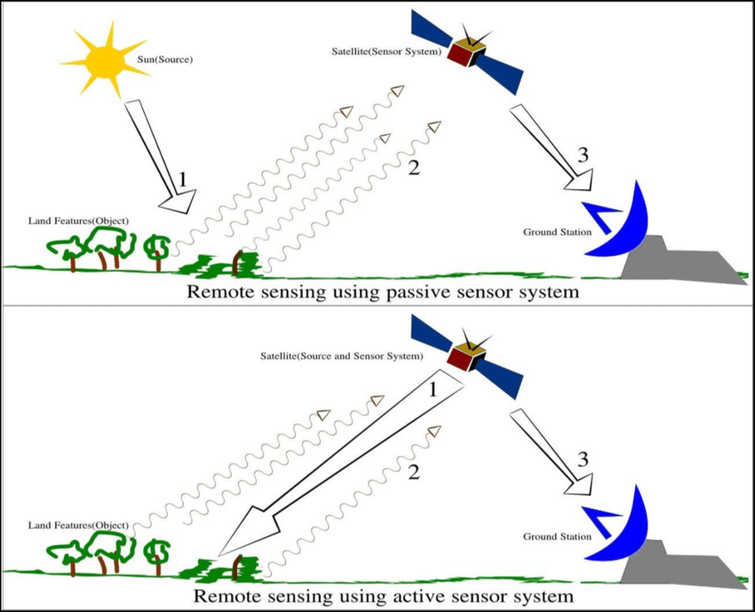

1. An Introduction to Remote Sensing
This is a learning diary for week 1.
Let‚Äôs get started with remote sensing to explore our world üåè
1.1 Summary
1.1.1 Remote sensing üì°
- Acquiring information from a distance through sensors such as satellites, planes(aerial imagery), drones etc. - e.g. satellites collect data on the same points on Earth every day to every 16 days.
- Type of orbit
- geosynchronous orbit (GSO): satellite matches the Earth’s rotation
- geostationary orbit: holds the same position
1.1.2 Types of waves 〰️
An electromagnetic wave has two components, an electric field(moving up and down) and a magnetic field(moving left and right).
- The two types of sensors with electromagnetic waves.
Types How to work Emission Examples Passive use available energy
(from the sun)Nothing Human eye, camera,
satellite sensorActive have an energy source for illumination emits electromagnetic waves and then waits to receive Radar, X-ray, LiDAR
Electromagnetic radiation(EMR) from the sun isn’t automatically reflected. It interacts with Earth’s surface and chchangesefore hitting the sensor.- e.g. being absorbed by the surface, transmitted through the surface, or (sunlight is) scattered by particles in the atmosphere.
Sunlight
- An electromagnetic wave emitted by the sun.
- The shorter the wavelength,
- the more robust the electromagnetic wave energy
- the bluer it is üåà
- The visible colour usually changes depending on the distance light reaches and the size of particles in the atmosphere.
Types Feature Visible light has a rainbow spectrum
Particles or molecules scatter unabsorbed ultraviolet rays in the atmosphere, and we can only observe this.
Infrared light - invisible
Ultraviolet light invisible
absorbed mainly by the ozone layer
1.1.3 Light scattering & methods to gauge distance üìê
A phenomenon in which light with straightness is scattered in all directions by rough surfaces or tiny particles.
It makes distance measurement difficult (e.g. atmosphere, clouds) → we need alternative methods to gauge distance
Synthetic aperture radar (SAR): Polarization, Fluoresence
Bidirectional Reflectance Distribution Function (BRDF): reflects visible and invisible parts simultaneously depending on the satellite angle
Atmospheric correction: remove what affected by the atmospheric scattering
- Low resolution means it has a large pixel size
- Four elements to decide the resolution of Remotely sensed data
Types Feature Examples Spatial - the size of the raster grid per pixel
20cm / 30m Spectral - the number of bands it records data in
- Temporal - the time it revisits
daily / weekly / on demand Radiometric identify differences in light or reflectance
lower the radiometric resolution, the lower the quality of the image
4/8/11-bit sensor
1.2 Application
In forestry: Forest (soil) survey, pest damage investigation, forest fire damage investigation, tree species discrimination (confirming the distribution of coniferous or broadleaf trees) by taking seasonal aerial photographs.
In architecture: to crack down on illegal buildings or check the boundaries of buildings / cadastral lines.
to identify or prevent the degree of damage from natural disasters such as air pollution and floods.
to check time-series changes in distances or spaces at specific locations.
aerial photographs of famous tourist attractions are interpreted as artwork.
When choosing the most appropriate sensor for the analysis, the following factors should be considered: Size of features, date range, revisit requirement, spectral sensitivity, cost etc.
1.3 Reflection
I tend to check the location in advance with satellite images through Google Maps before I go to an unfamiliar place.
Learning about remote sensing data in Week 1 reminded me that I have been unconsciously using tremendously advanced technology so far, and I have not recognised it because it is commonly used. In addition, it also reminded me that I used annual aerial photographs to check the phenomenon of the urban sprawl of Suwon City when I worked in South Korea.
Considering that remote sensing data(e.g. aerial photographs) taken at equal intervals can soon be used as historical data for specific spaces, I thought it would be interesting to make future museums fill with 3D aerial photographs, not relics.